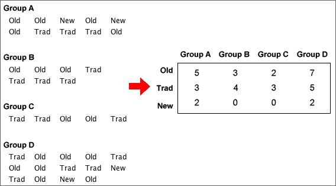

If you don't want to print now,
Probabilities for a finite population
Random sampling from populations is described using probability. If one value is sampled from a finite population of N distinct values, we say that
Many populations contain values that occur more than once. When sampling from any population,
The probability that a single sampled value is either x, y, ... is the proportion of population values that are either x, y, ... .
For numerical populations, the most useful form of this result is:
Prob( a < X < b ) = propn of values between a and b.
Probability and population proportion
When sampling from any population, whether finite or infinite,
The probability of sampling any value or range of values equals the proportion of these values in the population.
Probability and long-term proportion
An alternative but equivalent way to think about probability arises when we can imagine repeatedly selecting more and more values from the population (e.g. repeating an experiment). The probability of any value or range of values is the limiting proportion of these values as the sample size increases.
The equivalence of the two definitions is called the law of large numbers.
Describing categorical and discrete populations
Categorical and discrete samples can be described graphically with bar charts of the proportions for the distinct values. Since probabilities are defined to be population proportions, the underlying population can also be described by a bar chart.

Bar charts and the law of large numbers
The law of large numbers states that sample proportions approach the underlying probabilities as the sample size increases. This means that a sample bar chart will be close in shape to the unknown population bar chart if the sample size is big enough.
Relative frequency
When all histogram classes are of equal width, histograms are often drawn with a vertical axis giving the frequencies (counts) for each class. The vertical axis can alternatively be labelled with the relative frequencies (proportions) for the classes.
(There is no harm in including both axes.)

Area equals relative frequency
An important property of histograms is that the proportion of values in one or more classes equals the proportion of the histogram area above these classes.

Therefore,
Relative frequency = proportion of the total area
Exercises are only available online.
Exercises are only available online.
We are often interested in whether a categorical distribution is the same in two or more groups of individuals. The categorical data in each group can be expressed as a frequency table. Combining these frequency tables into a single rectangular array gives a contingency table.

Categorical variables and groups
The raw data may be a list of values from each of several groups (as above) or the groups may be specified by a categorical variable in a single data matrix.

A contingency table may arise from an experiment (where one variable is controlled by the experimentor) or a survey (where there is no control over the individuals).
Example (from experiment)
To test whether vitamin C reduces the risk of catching a cold, a 1961 French study involved 279 skiers over two periods of 5-7 days. Skiers in one group of 139 were given 1 gram ascorbic acid (vitamin C) per day whereas those in the other group were given a tablet that looked similar but had no active ingredient (called a placebo). None of the skiers knew which of the treatments they had received.
| Cold | No cold | |
|---|---|---|
| Ascorbic acid | 17 | 122 |
| Placebo | 31 | 109 |
Example (from survey)
Urine drug screening was performed on 2537 applicants for career craft positions in the US Postal Service's Boston Management Sectional Center. The contingency table below shows the distribution of test results, split by gender. (Those testing positive for more than one drug were classified under the more serious of the drugs, so each individual only contributed to a single cell in the table.)
| Negative | Marijuana | Cocaine | Other drugs | Total | |
|---|---|---|---|---|---|
| Male | 1465 | 146 | 33 | 28 | 1672 |
| Female | 764 | 52 | 22 | 27 | 865 |
Proportions within groups
To compare the distributions of a categorical variable in different groups, it is best to examine the proportions within the groups — the cell frequencies divided by their group totals.
In a study of racial differences in blood types, 145,057 blood specimens from the Blood Bank of Hawaii were tested.
| Blood type | |||||
|---|---|---|---|---|---|
| Ethnic group | O | A | B | AB | Total |
| Hawaiian | 01,903 | 02,490 | 00,178 | 0,099 | 4,670 |
| Hawaiian-white | 04,469 | 04,671 | 00,606 | 0,236 | 9,982 |
| Hawaiian-chinese | 02,206 | 02,368 | 00,568 | 0,243 | 5,385 |
| White | 53,759 | 50,008 | 16,252 | 5,001 | 125,020 |
From the table of within-group percentages below, it is clearer that blood groups B and AB are rarer for Hawaiians and Hawaiian-whites than for the other ethnic groups.
| Blood type | |||||
|---|---|---|---|---|---|
| Ethnic group | O | A | B | AB | Total |
| Hawaiian | 40.7 | 53.3 | 03.8 | 02.1 | 100.0 |
| Hawaiian-white | 44.8 | 46.8 | 06.1 | 02.4 | 100.0 |
| Hawaiian-chinese | 41.0 | 44.0 | 10.5 | 04.5 | 100.0 |
| White | 43.0 | 40.0 | 13.0 | 04.0 | 100.0 |
Bar charts of proportions
Bar charts can be used to graphically compare groups and it is again best to use proportions within groups rather than raw frequencies, especially if the groups are of different sizes.

Clustering the bars
Each cluster of bars above is a valid bar chart for one group. Alternatively, the same bars can be clustered by the variable of interest:

This makes it easier to make comparisons between the groups.
Categorical variables and groups
A categorical variable can be used to split the individuals in a data set into groups. We might treat individuals with values "A", "B", etc. as belonging to different groups.
Conversely, if data were separately collected from different groups of individuals, the resulting data sets could be combined with a categorical variable distinguishing between the groups. Its values might be defined as "A", "B", etc. to identify the group membership of any individual.
A categorical variable and groups are often two ways of representing the same data.
Data presented in a separate list for each group are called unstacked whereas if the data are presented as a single list alongside a categorical variable, they are called stacked.
Exercises are only available online.
Time series data
Data sets whose measurements are made sequentially at regular intervals are called time series. We often want to forecast future values of a time series.
The importance of plotting
As with other data structures, the information in a time series is most easily understood from a graphical display. A time series plot is a type of scatterplot whose horizontal axis shows the time-ordering of the values. Successive crosses are often joined by lines.

Types of pattern
| Trend | Seasonal variation |
|---|---|
Trend refers to long-term increases and decreases in the values.
 |
This is often evident in monthly or quarterly data and refers to a pattern
that is repeated each year.
 |
| Random fluctuations | ||
|---|---|---|
These are 'ups and downs' in a time series that do not correspond
to trend or seasonal variation .
 |
Most time series show more than one of these patterns to some degree.
Displaying several time series on the same plot
Several related time series can be superimposed with different colours on the same display, making comparisons easier. The crosses may be omitted.